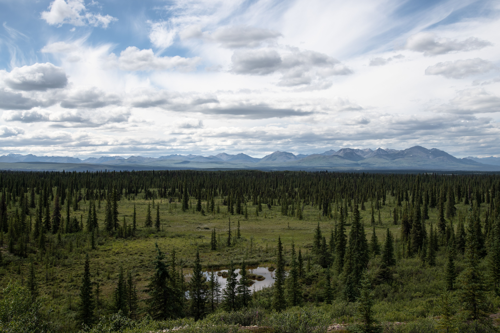
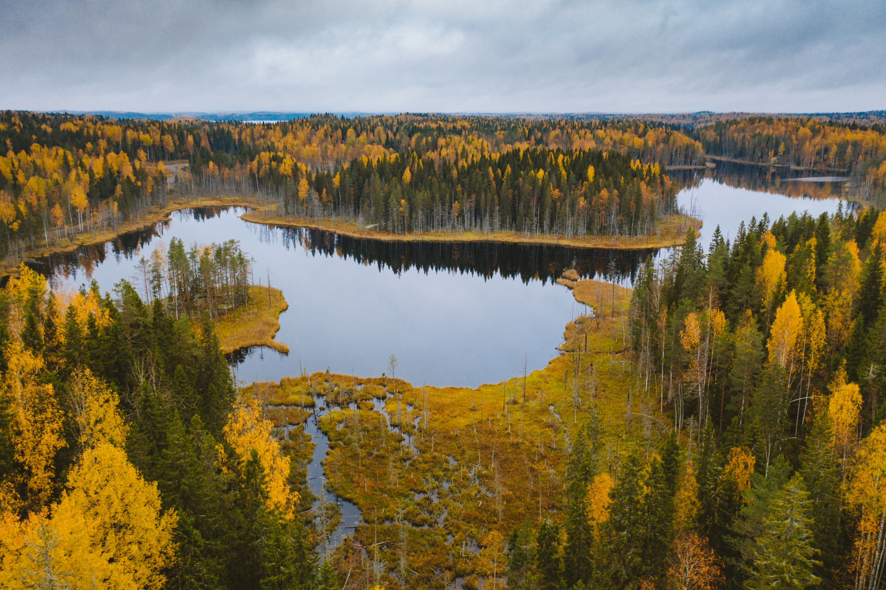

The Vast Northern Taiga
The boreal forest, also known as the taiga, is the world's largest land-based biome, stretching in a broad belt across North America, Europe, and Asia. Characterized by long, severe winters and short, mild summers, this biome is dominated by cold-hardy evergreen conifers like pines, spruces, and larches.
Despite the harsh climate, the taiga supports a vast network of pristine lakes, peatlands, and dense woodlands that provide sanctuary for countless migrating birds and large mammals.
Global Carbon Reservoirs
For students examining environmental science and climate change, boreal forests are powerhouse carbon sinks. Their underlying soils and peat bogs trap massive amounts of organic carbon, playing a crucial role in regulating atmospheric greenhouse gases.
Iconic wildlife such as wolves, lynx, moose, and millions of breeding birds rely on the undisturbed expanse of the taiga for survival, making its preservation a top priority for global conservation efforts.

Key Environmental Metrics
Essential scientific data points defining the boreal forest biome.
~30%
Of Earth's total forest cover
~30%
Of all land-stored carbon globally
-40°C
Extreme sub-zero seasonal lows